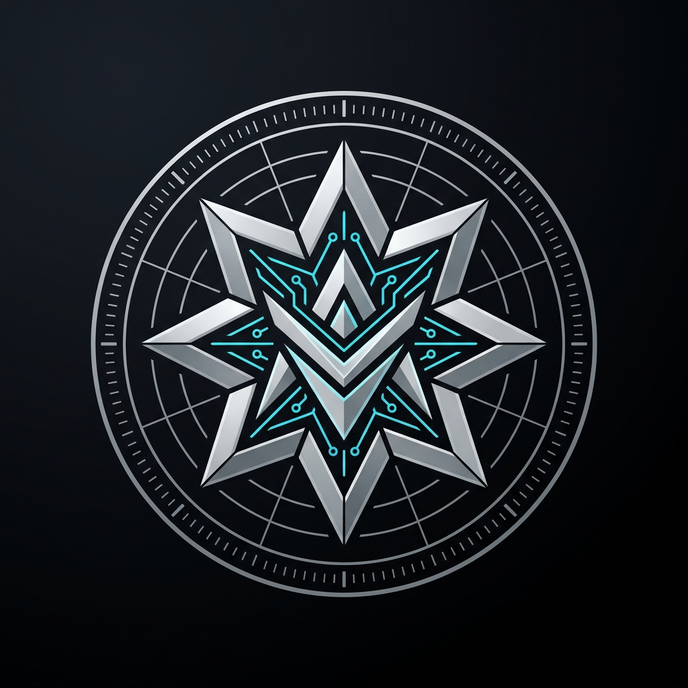

KAM
Hazır
·
39 Araç
·
S
%3
kam:apex
▾
Komutlar
Ctrl K
Sistem
Emrinizdeyim.
RTX 5060 GPU · 64 GB RAM · Tam Yetkili Otonom Bilgisayar Ajanı
Donanım & GPU denetle
Açık pencereler & süreçler
Kod külliyatını analiz et
Canlı kokpit üret ve aç
kam:apex
Kurul
Ctrl K
ESC
Bilişsel Zihin Seçimi
✕
Aktif Model
kam:apex (Qwen3 8B — Hibrit Düşünen Komuta Zihni · %100 GPU)
kam:council (5-Modelli Otonom Bilişsel Kurul)
kam:7b (Qwen 2.5 7B — Duru Türkçe Zihin)
kam:coder (Qwen 2.5 Coder 7B — Kod & Sistem Mühendisi)
kam:r1 (DeepSeek-R1 7B — Derin Akıl Yürütme)
kam:coder-nano (1.5B Hızlı Kod)
kam:r1-nano (1.5B Hızlı CoT)
kam:1.5b (1.5B Hafif Uç Model)
gemini-1.5-flash (Google Gemini Bulut)
kam-1-liquid-moe (Offline Çekirdek)
Google Gemini API Key (İsteğe Bağlı)